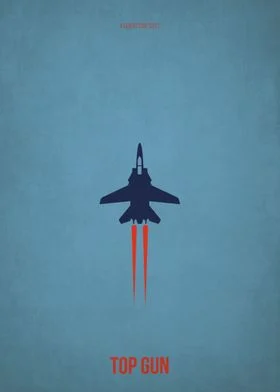

Top Gun: Maverick
Released:
2022
Genre:
Action, Adventure
Overview:
After more than 30 years of service as one of the Navy's top aviators,
Pete "Maverick" Mitchell is where he belongs, pushing the envelope as
a courageous test pilot and dodging the advancement in rank that would
ground him. Training a detachment of graduates for a special
assignment, Maverick must confront the ghosts of his past and his
deepest fears, culminating in a mission that demands the ultimate
sacrifice from those who choose to fly it.